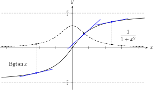
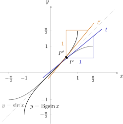
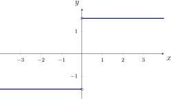
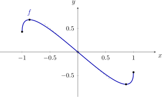
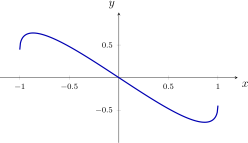

Hoofdstuk 20Verloop van
cyclometrische functies

Leerplandoelstellingen (GO! Navigator)
Gevorderde wiskunde (WD3_06.08)
-
• WD3_06.08.28 De leerlingen berekenen de afgeleide functie van functies die zijn opgebouwd uit veeltermfuncties, rationale functies, irrationale functies, exponentiële functies, logaritmische functies, goniometrische functies en cyclometrische functies.
-
– afbakening: afleidbaarheid
-
– afbakening: rekenregels: afgeleide van een som, product, quotiënt van functies en afgeleide van een samengestelde functie (kettingregel)
-
– afbakening: regel van de l’Hôpital
-
– WD3_06.08.28.01 (MD 06.08.17) De leerlingen berekenen de afgeleide functie van functies die zijn opgebouwd uit veeltermfuncties, rationale functies, irrationale functies, exponentiële functies, logaritmische functies en goniometrische functies.
-
– WD3_06.08.28.02 De leerlingen berekenen de afgeleide functie van functies die zijn opgebouwd uit cyclometrische functies.
-
-
• WD3_06.08.29 (MD 06.08.18) De leerlingen analyseren het verloop van functies met behulp van de eerste en tweede afgeleide functie en lossen extremumproblemen op.
-
– afbakening: stelling van Rolle, middelwaardestelling van Lagrange
-
I Herhaling
1 Definities
De cyclometrische functies kennen we uit hoofdstuk 10. Elk is de inverse van een goniometrische functie, beperkt tot een interval waarop die een bijectie is:
\(\seteqnumber{0}{}{0}\)\begin{align*} y=\Bgsin x &\iff \sin y=x \text { en } y\in \left [-\frac {\pi }{2},\frac {\pi }{2}\right ]\\ y=\Bgcos x &\iff \cos y=x \text { en } y\in [0,\pi ]\\ y=\Bgtan x &\iff \tan y=x \text { en } y\in \left ]-\frac {\pi }{2},\frac {\pi }{2}\right [\\ y=\Bgcot x &\iff \cot y=x \text { en } y\in \left ]0,\pi \right [ \end{align*} Zie ook handboek VBTL Analyse 3, p 129. In dit hoofdstuk leiden we die functies af en onderzoeken we het verloop van functies waarin ze voorkomen.
2 Eigenschappen die we nodig hebben
Uit hoofdstuk 10 gebruiken we
\(\seteqnumber{0}{}{0}\)\begin{align*} \sin (\Bgsin x)&=x \quad \text {en}\quad \cos (\Bgsin x)=\sqrt {1-x^2} && (x\in [-1,1])\\ \tan (\Bgtan x)&=x && (x\in \R )\\ \Bgsin x+\Bgcos x&=\frac {\pi }{2} && (x\in [-1,1])\\ \Bgtan x+\Bgcot x&=\frac {\pi }{2} && (x\in \R ) \end{align*}
II Afgeleide van Bgsin en Bgcos
1 Afgeleide van \(\Bgsin x\)
\(x\in \left ]-1,1\right [\)
\(\seteqnumber{0}{}{0}\)\begin{alignat*} {3} &\Rightarrow \quad & \sin (\Bgsin x) &= x\\ &\Rightarrow \quad & \cos (\Bgsin x)\cdot (\Bgsin x)' &= 1 &\quad & (\text {afleiden, kettingregel})\\ &\Leftrightarrow \quad & (\Bgsin x)' &= \frac {1}{\cos (\Bgsin x)} && \bigl (\Bgsin x\in \left ]-\tfrac {\pi }{2},\tfrac {\pi }{2}\right [ \text {, dus } \cos >0\bigr )\\ &\Leftrightarrow \quad & (\Bgsin x)' &= \frac {1}{\sqrt {1-x^2}} && \bigl (\cos (\Bgsin x)=\sqrt {1-x^2}\bigr ) \end{alignat*}
\[ \boxed {(\Bgsin x)'=\frac {1}{\sqrt {1-x^2}}} \qquad (x\in \left ]-1,1\right [) \]
En wegens de kettingregel
\[ \boxed {\bigl (\Bgsin f(x)\bigr )'=\frac {f'(x)}{\sqrt {1-f^2(x)}}} \]
Dat \(\Bgsin \) afleidbaar is in \(\left ]-1,1\right [\), aanvaarden we hier: de grafiek is het spiegelbeeld van een gladde kromme, en de raaklijnen spiegelen mee. In \(\pm 1\) is \(\Bgsin \) niet afleidbaar: daar wordt de noemer \(0\).
2 Afgeleide van \(\Bgcos x\)
\(\Bgsin x+\Bgcos x=\frac {\pi }{2}\)
\(\seteqnumber{0}{}{0}\)\begin{alignat*} {2} &\Rightarrow \quad & (\Bgcos x)' &= \Bigl (\frac {\pi }{2}-\Bgsin x\Bigr )'\\ && &= 0-\frac {1}{\sqrt {1-x^2}}\\ && &= \frac {-1}{\sqrt {1-x^2}} \end{alignat*}
\[ \boxed {(\Bgcos x)'=\frac {-1}{\sqrt {1-x^2}}} \qquad (x\in \left ]-1,1\right [) \]
En wegens de kettingregel
\[ \boxed {\bigl (\Bgcos f(x)\bigr )'=\frac {-f'(x)}{\sqrt {1-f^2(x)}}} \]
De grafiek van \(\Bgcos \) is die van \(\Bgsin \), gespiegeld om de \(x\)-as en \(\frac {\pi }{2}\) omhoog geschoven. Daarom verschillen de afgeleiden enkel in teken.
3 Meetkundige betekenis
De grafiek van \(\Bgsin \) is het spiegelbeeld van de beperkte sinusgrafiek om de rechte \(y=x\). Spiegelen verwisselt \(x\) en \(y\). Een hellingsdriehoekje met een horizontale zijde \(1\) en een verticale zijde \(m\) wordt dus een driehoekje met een verticale zijde \(1\) en een horizontale zijde \(m\). De rico gaat van \(m\) naar \(\frac {1}{m}\).
Ligt \(P\bigl (a,\sin a\bigr )\) op de sinusgrafiek, dan ligt \(P'\bigl (\sin a,a\bigr )\) op de grafiek van \(\Bgsin \). De raaklijn in \(P\) heeft rico \(\cos a\), die in \(P'\) dus rico \(\dfrac {1}{\cos a}\). Met \(b=\sin a\) is \(\cos a=\sqrt {1-b^2}\), en dat is precies de formule van hierboven.

In \(a=\pm \frac {\pi }{2}\) is de raaklijn aan de sinusgrafiek horizontaal. Het spiegelbeeld is een verticale raaklijn: de grafiek van \(\Bgsin \) vertrekt in \(\bigl (-1,-\frac {\pi }{2}\bigr )\) en komt aan in \(\bigl (1,\frac {\pi }{2}\bigr )\) met een verticale raaklijn.
4 Voorbeelden
Bereken de volgende afgeleiden.
-
(a) \((\Bgsin 2x)'\)
\((\Bgsin 2x)' = \frac {2}{\sqrt {1-4x^2}}\)
\(\seteqnumber{0}{}{0}\)\begin{align*} (\Bgsin 2x)' &= \frac {(2x)'}{\sqrt {1-(2x)^2}}\\ &= \frac {2}{\sqrt {1-4x^2}}. \end{align*}
-
(b) \(\bigl (\Bgcos (x^2)\bigr )'\)
\(\bigl (\Bgcos (x^2)\bigr )' = \frac {-2x}{\sqrt {1-x^4}}\)
\(\seteqnumber{0}{}{0}\)\begin{align*} \bigl (\Bgcos (x^2)\bigr )' &= \frac {-(x^2)'}{\sqrt {1-(x^2)^2}}\\ &= \frac {-2x}{\sqrt {1-x^4}}. \end{align*}
-
(c) \(\Bigl (\Bgsin \dfrac {x}{a}\Bigr )'\) met \(a>0\)
\(\Bigl (\Bgsin \frac {x}{a}\Bigr )' = \frac {1}{\sqrt {a^2-x^2}}\)
\(\seteqnumber{0}{}{0}\)\begin{align*} \Bigl (\Bgsin \frac {x}{a}\Bigr )' &= \frac {\frac {1}{a}}{\sqrt {1-\frac {x^2}{a^2}}}\\ &= \frac {\frac {1}{a}}{\frac {1}{a}\sqrt {a^2-x^2}}\\ &= \frac {1}{\sqrt {a^2-x^2}}. \end{align*} Omdat \(a>0\) is \(\sqrt {a^2}=a\). Deze vorm komt terug bij het integreren.
-
(d) \(\bigl (\Bgsin (2x-1)\bigr )'\)
\(\bigl (\Bgsin (2x-1)\bigr )' = \frac {1}{\sqrt {x-x^2}}\)
\(\seteqnumber{0}{}{0}\)\begin{align*} \bigl (\Bgsin (2x-1)\bigr )' &= \frac {2}{\sqrt {1-(2x-1)^2}}\\ &= \frac {2}{\sqrt {1-4x^2+4x-1}}\\ &= \frac {2}{\sqrt {4(x-x^2)}}\\ &= \frac {1}{\sqrt {x-x^2}}. \end{align*}
-
(e) \((x\Bgsin x)'\)
\((x\Bgsin x)' = \Bgsin x+\frac {x}{\sqrt {1-x^2}}\)
\(\seteqnumber{0}{}{0}\)\begin{align*} (x\Bgsin x)' &= (x)'\Bgsin x+x\,(\Bgsin x)'\\ &= \Bgsin x+\frac {x}{\sqrt {1-x^2}}. \end{align*}
-
(f) \(\bigl (\Bgsin ^2 x\bigr )'\)
\(\bigl (\Bgsin ^2 x\bigr )' = \frac {2\Bgsin x}{\sqrt {1-x^2}}\) Let op: \(\Bgsin ^2 x=(\Bgsin x)^2\), een macht van een functie.
\(\seteqnumber{0}{}{0}\)\begin{align*} \bigl (\Bgsin ^2 x\bigr )' &= 2\Bgsin x\cdot (\Bgsin x)'\\ &= \frac {2\Bgsin x}{\sqrt {1-x^2}}. \end{align*}
-
(g) \(\bigl (e^{\Bgsin x}\bigr )'\)
\(\bigl (e^{\Bgsin x}\bigr )' = \frac {e^{\Bgsin x}}{\sqrt {1-x^2}}\)
\(\seteqnumber{0}{}{0}\)\begin{align*} \bigl (e^{\Bgsin x}\bigr )' &= e^{\Bgsin x}\cdot (\Bgsin x)'\\ &= \frac {e^{\Bgsin x}}{\sqrt {1-x^2}}. \end{align*}
-
(h) \(\bigl (\ln \Bgcos x\bigr )'\)
\(\bigl (\ln \Bgcos x\bigr )' = \frac {-1}{\sqrt {1-x^2}\,\Bgcos x}\)
\(\seteqnumber{0}{}{0}\)\begin{align*} \bigl (\ln \Bgcos x\bigr )' &= \frac {(\Bgcos x)'}{\Bgcos x}\\ &= \frac {-1}{\sqrt {1-x^2}\,\Bgcos x}. \end{align*}
-
(i) \(\Bigl (\Bgcos \dfrac {1}{x}\Bigr )'\)
\(\Bigl (\Bgcos \frac {1}{x}\Bigr )' = \frac {1}{|x|\sqrt {x^2-1}}\)
\(\seteqnumber{0}{}{0}\)\begin{align*} \Bigl (\Bgcos \frac {1}{x}\Bigr )' &= \frac {-\bigl (\frac {1}{x}\bigr )'}{\sqrt {1-\frac {1}{x^2}}}\\ &= \frac {\frac {1}{x^2}}{\frac {\sqrt {x^2-1}}{\sqrt {x^2}}}\\ &= \frac {\sqrt {x^2}}{x^2\sqrt {x^2-1}}\\ &= \frac {1}{|x|\sqrt {x^2-1}}. \end{align*} Let op: \(\sqrt {x^2}=|x|\), want \(x\) kan hier ook negatief zijn.
-
(j) \(\bigl (x\sqrt {1-x^2}+\Bgsin x\bigr )'\)
\(\bigl (x\sqrt {1-x^2}+\Bgsin x\bigr )' = 2\sqrt {1-x^2}\)
\(\seteqnumber{0}{}{0}\)\begin{align*} \bigl (x\sqrt {1-x^2}+\Bgsin x\bigr )' &= \sqrt {1-x^2}+x\cdot \frac {-2x}{2\sqrt {1-x^2}}+\frac {1}{\sqrt {1-x^2}}\\ &= \frac {(1-x^2)-x^2+1}{\sqrt {1-x^2}}\\ &= \frac {2(1-x^2)}{\sqrt {1-x^2}}\\ &= 2\sqrt {1-x^2}. \end{align*} Een ingewikkelde functie met een eenvoudige afgeleide. Ook die komt terug bij het integreren: de oppervlakte van een cirkel.
5 VBTL Oefeningen
Afgeleiden berekenen:
VBTL Analyse 2: p 150 nr 7 (a tot c, e en h)
Raaklijn:
VBTL Analyse 2: p 164 nr 1 (i)
III Afgeleide van Bgtan en Bgcot
1 Afgeleide van \(\Bgtan x\)
\(x\in \R \)
\(\seteqnumber{0}{}{0}\)\begin{alignat*} {3} &\Rightarrow \quad & \tan (\Bgtan x) &= x\\ &\Rightarrow \quad & \bigl (1+\tan ^2(\Bgtan x)\bigr )\cdot (\Bgtan x)' &= 1 &\quad & \bigl (\text {afleiden, } (\tan u)'=1+\tan ^2 u\bigr )\\ &\Leftrightarrow \quad & (1+x^2)\cdot (\Bgtan x)' &= 1 && \bigl (\tan (\Bgtan x)=x\bigr )\\ &\Leftrightarrow \quad & (\Bgtan x)' &= \frac {1}{1+x^2} && (1+x^2>0) \end{alignat*} Met \(1+\tan ^2\) in plaats van \(\frac {1}{\cos ^2}\) hoeven we niets over \(\cos (\Bgtan x)\) te weten.
\[ \boxed {(\Bgtan x)'=\frac {1}{1+x^2}} \]
En wegens de kettingregel
\[ \boxed {\bigl (\Bgtan f(x)\bigr )'=\frac {f'(x)}{1+f^2(x)}} \]
De noemer is nooit \(0\): \(\Bgtan \) is afleidbaar in heel \(\R \), en de afgeleide is overal positief. De grafiek stijgt dus overal, het steilst in \(0\), waar de rico \(1\) is.
2 Afgeleide van \(\Bgcot x\)
\(\Bgtan x+\Bgcot x=\frac {\pi }{2}\)
\(\seteqnumber{0}{}{0}\)\begin{alignat*} {2} &\Rightarrow \quad & (\Bgcot x)' &= \Bigl (\frac {\pi }{2}-\Bgtan x\Bigr )'\\ && &= 0-\frac {1}{1+x^2}\\ && &= \frac {-1}{1+x^2} \end{alignat*}
\[ \boxed {(\Bgcot x)'=\frac {-1}{1+x^2}} \]
En wegens de kettingregel
\[ \boxed {\bigl (\Bgcot f(x)\bigr )'=\frac {-f'(x)}{1+f^2(x)}} \]
3 Overzicht
\[ \begin {array}{ll} D\Bgsin x = \dfrac {1}{\sqrt {1-x^2}} & D\Bgsin f(x) = \dfrac {Df(x)}{\sqrt {1-f^2(x)}} \\[1.4em] D\Bgcos x = \dfrac {-1}{\sqrt {1-x^2}} & D\Bgcos f(x) = \dfrac
{-Df(x)}{\sqrt {1-f^2(x)}} \\[1.4em] D\Bgtan x = \dfrac {1}{1+x^2} & D\Bgtan f(x) = \dfrac {Df(x)}{1+f^2(x)} \\[1.4em] D\Bgcot x = \dfrac {-1}{1+x^2} & D\Bgcot f(x) = \dfrac
{-Df(x)}{1+f^2(x)} \end {array} \]
Opvallend: de afgeleiden van functies die zelf niets met veeltermen te maken hebben, zijn algebraïsche functies. Geen sinus of cosinus meer.
4 Voorbeelden
Bereken de volgende afgeleiden.
-
(a) \((\Bgtan 3x)'\)
\((\Bgtan 3x)' = \frac {3}{1+9x^2}\)
\(\seteqnumber{0}{}{0}\)\begin{align*} (\Bgtan 3x)' &= \frac {(3x)'}{1+(3x)^2}\\ &= \frac {3}{1+9x^2}. \end{align*}
-
(b) \(\bigl (\Bgtan \sqrt {x}\,\bigr )'\)
\(\bigl (\Bgtan \sqrt {x}\,\bigr )' = \frac {1}{2\sqrt {x}\,(1+x)}\)
\(\seteqnumber{0}{}{0}\)\begin{align*} \bigl (\Bgtan \sqrt {x}\,\bigr )' &= \frac {\bigl (\sqrt {x}\bigr )'}{1+\bigl (\sqrt {x}\bigr )^2}\\ &= \frac {1}{2\sqrt {x}\,(1+x)}. \end{align*}
-
(c) \(\Bigl (\Bgtan \dfrac {x}{a}\Bigr )'\) met \(a\neq 0\)
\(\Bigl (\Bgtan \frac {x}{a}\Bigr )' = \frac {a}{a^2+x^2}\)
\(\seteqnumber{0}{}{0}\)\begin{align*} \Bigl (\Bgtan \frac {x}{a}\Bigr )' &= \frac {\frac {1}{a}}{1+\frac {x^2}{a^2}}\\ &= \frac {\frac {1}{a}}{\frac {a^2+x^2}{a^2}}\\ &= \frac {a}{a^2+x^2}. \end{align*}
-
(d) \(\bigl (\Bgtan e^x\bigr )'\)
\(\bigl (\Bgtan e^x\bigr )' = \frac {e^x}{1+e^{2x}}\)
\(\seteqnumber{0}{}{0}\)\begin{align*} \bigl (\Bgtan e^x\bigr )' &= \frac {(e^x)'}{1+(e^x)^2}\\ &= \frac {e^x}{1+e^{2x}}. \end{align*}
-
(e) \(\bigl (\Bgcot (2x-1)\bigr )'\)
\(\bigl (\Bgcot (2x-1)\bigr )' = \frac {-1}{2x^2-2x+1}\)
\(\seteqnumber{0}{}{0}\)\begin{align*} \bigl (\Bgcot (2x-1)\bigr )' &= \frac {-2}{1+(2x-1)^2}\\ &= \frac {-2}{4x^2-4x+2}\\ &= \frac {-1}{2x^2-2x+1}. \end{align*}
-
(f) \(\bigl (x^2\Bgtan x\bigr )'\)
\(\bigl (x^2\Bgtan x\bigr )' = 2x\Bgtan x+\frac {x^2}{1+x^2}\)
\(\seteqnumber{0}{}{0}\)\begin{align*} \bigl (x^2\Bgtan x\bigr )' &= 2x\Bgtan x+x^2\cdot \frac {1}{1+x^2}\\ &= 2x\Bgtan x+\frac {x^2}{1+x^2}. \end{align*}
-
(g) \(\Bigl (x\Bgtan x-\dfrac 12\ln (1+x^2)\Bigr )'\)
\(\Bigl (x\Bgtan x-\frac 12\ln (1+x^2)\Bigr )' = \Bgtan x\)
\(\seteqnumber{0}{}{0}\)\begin{align*} \Bigl (x\Bgtan x-\frac 12\ln (1+x^2)\Bigr )' &= \Bgtan x+\frac {x}{1+x^2}-\frac 12\cdot \frac {2x}{1+x^2}\\ &= \Bgtan x. \end{align*}
-
(h) \(\Bigl (\dfrac {\Bgtan x}{x}\Bigr )'\)
\(\Bigl (\frac {\Bgtan x}{x}\Bigr )' = \frac {x-(1+x^2)\Bgtan x}{x^2(1+x^2)}\)
\(\seteqnumber{0}{}{0}\)\begin{align*} \Bigl (\frac {\Bgtan x}{x}\Bigr )' &= \frac {\frac {1}{1+x^2}\cdot x-\Bgtan x\cdot 1}{x^2}\\ &= \frac {x-(1+x^2)\Bgtan x}{x^2(1+x^2)}. \end{align*}
-
(i) \(\bigl (\Bgtan (\tan x)\bigr )'\) met \(x\in \left ]-\frac {\pi }{2},\frac {\pi }{2}\right [\)
\(\bigl (\Bgtan (\tan x)\bigr )' = 1\)
\(\seteqnumber{0}{}{0}\)\begin{align*} \bigl (\Bgtan (\tan x)\bigr )' &= \frac {(\tan x)'}{1+\tan ^2 x}\\ &= \frac {1+\tan ^2 x}{1+\tan ^2 x}\\ &= 1. \end{align*} Geen verrassing: op dat interval is \(\Bgtan (\tan x)=x\).
-
(j) \(\Bigl (\Bgtan \dfrac {1+x}{1-x}\Bigr )'\)
\(\Bigl (\Bgtan \frac {1+x}{1-x}\Bigr )' = \frac {1}{1+x^2}\)
\(\seteqnumber{0}{}{0}\)\begin{align*} \Bigl (\frac {1+x}{1-x}\Bigr )' &= \frac {(1-x)+(1+x)}{(1-x)^2} = \frac {2}{(1-x)^2}\\[0.5em] \Bigl (\Bgtan \frac {1+x}{1-x}\Bigr )' &= \frac {\dfrac {2}{(1-x)^2}}{1+\dfrac {(1+x)^2}{(1-x)^2}}\\ &= \frac {2}{(1-x)^2+(1+x)^2}\\ &= \frac {2}{2+2x^2}\\ &= \frac {1}{1+x^2}. \end{align*} Dezelfde afgeleide als \(\Bgtan x\). Wat dat betekent, zien we hieronder.
5 Toepassing: grafiek van \(\Bgtan x+\Bgtan \frac {1}{x}\)
Neem \(g(x)=\Bgtan x+\Bgtan \dfrac {1}{x}\) met \(x\neq 0\). Hoe ziet de grafiek eruit?
Met GRM
statplotf1y= en voer het voorschrift in.
\(\Bgtan \) is 2ndtan⁻¹Gtan. Het GRM staat in RADIAN.
tblsetf2window
\(X\) van \(-4\) tot \(4\), \(Y\) van \(-2\) tot \(2\).
tablef5graph
Twee horizontale stukken: de functie lijkt constant, met een sprong in \(0\).

2ndcalcf4trace 1:value in \(x=2\).
\(\Rightarrow \) \(g(2)\approx 1.5708\approx \frac {\pi }{2}\).
Hetzelfde in \(x=-3\).
\(\Rightarrow \) \(g(-3)\approx -1.5708\approx -\frac {\pi }{2}\).
Het GRM doet vermoeden dat \(g(x)=\frac {\pi }{2}\) voor \(x>0\) en \(g(x)=-\frac {\pi }{2}\) voor \(x<0\). Een paar waarden bewijzen dat niet.
Algebraïsch bewijs
Een functie waarvan de afgeleide op een interval overal \(0\) is, heeft daar overal een horizontale raaklijn: ze is er constant.
\(x\neq 0\)
\(\seteqnumber{0}{}{0}\)\begin{alignat*} {3} & & g'(x) &= \frac {1}{1+x^2}+\frac {-\frac {1}{x^2}}{1+\frac {1}{x^2}}\\ && &= \frac {1}{1+x^2}-\frac {1}{x^2+1}\\ && &= 0\\ &\Rightarrow \quad & g &\text { constant op } \left ]0,+\infty \right [ \text { en op } \left ]-\infty ,0\right [\\ &\Rightarrow \quad & g(x) &= g(1)=\frac {\pi }{4}+\frac {\pi }{4}=\frac {\pi }{2} &\quad & (x>0)\\ && g(x) &= g(-1)=-\frac {\pi }{4}-\frac {\pi }{4}=-\frac {\pi }{2} && (x<0) \end{alignat*}
\[ \boxed {\Bgtan x+\Bgtan \frac {1}{x}= \begin {cases} \phantom {-}\dfrac {\pi }{2} & \text {als } x>0\\[0.8em] -\dfrac {\pi }{2} & \text {als } x<0 \end {cases}} \]
Het domein van \(g\) bestaat uit twee stukken, en op elk stuk is de constante anders. De afgeleide \(0\) zegt enkel iets over één interval tegelijk.
Op dezelfde manier: \(\Bgtan \frac {1+x}{1-x}\) en \(\Bgtan x\) hebben dezelfde afgeleide, dus verschillen ze op \(\left ]-\infty ,1\right [\) een constante. In \(x=0\) is dat \(\Bgtan 1-\Bgtan 0=\frac {\pi }{4}\).
6 VBTL Oefeningen
Afgeleiden berekenen:
VBTL Analyse 2: p 150 nr 7 (d, f, g en i)
Raaklijn:
VBTL Analyse 2: p 165 nr 10
Afgeleiden combineren en herleiden:
VBTL Analyse 3: p 134 nr 2 tot 4; p 135 nr 6 (a tot d) en 7
IV Hogere afgeleiden
1 Voorbeelden
-
(a) Bereken \(f''(x)\) voor \(f(x)=\Bgtan x\).
\(f''(x) = \frac {-2x}{(1+x^2)^2}\) We schrijven \(f'(x)=\frac {1}{1+x^2}=(1+x^2)^{-1}\).
\(\seteqnumber{0}{}{0}\)\begin{align*} f''(x) &= -(1+x^2)^{-2}\cdot 2x\\ &= \frac {-2x}{(1+x^2)^2}. \end{align*} Voor \(x<0\) is \(f''(x)>0\) en voor \(x>0\) is \(f''(x)<0\): de grafiek van \(\Bgtan \) heeft een buigpunt in de oorsprong.
-
(b) Bereken \(f''(x)\) voor \(f(x)=\Bgsin x\).
\(f''(x) = \frac {x}{(1-x^2)\sqrt {1-x^2}}\) We schrijven \(f'(x)=(1-x^2)^{-\frac 12}\).
\(\seteqnumber{0}{}{0}\)\begin{align*} f''(x) &= -\frac 12(1-x^2)^{-\frac 32}\cdot (-2x)\\ &= \frac {x}{(1-x^2)\sqrt {1-x^2}}. \end{align*}
-
(c) Toon aan dat \(y=\Bgsin x\) voldoet aan \((1-x^2)\,y''-x\,y'=0\).
Met het vorige voorbeeld:
\(\seteqnumber{0}{}{0}\)\begin{align*} (1-x^2)\,y''-x\,y' &= (1-x^2)\cdot \frac {x}{(1-x^2)\sqrt {1-x^2}}-x\cdot \frac {1}{\sqrt {1-x^2}}\\ &= \frac {x}{\sqrt {1-x^2}}-\frac {x}{\sqrt {1-x^2}}\\ &= 0. \end{align*}
2 VBTL Oefeningen
VBTL Analyse 2: p 150 nr 8 (g tot i)
V De regel van de l’Hospital
1 Voorbeelden
Ook met cyclometrische functies ontstaan onbepaalde vormen. De regel van de l’Hospital (hoofdstuk 16) lost er heel wat op.
Bereken de volgende limieten.
-
(a) \(\displaystyle \lim _{x\to 0}\frac {\Bgsin x}{x}\)
\(\lim _{x\to 0}\frac {\Bgsin x}{x} = 1\)
\(\seteqnumber{0}{}{0}\)\begin{align*} \lim _{x\to 0}\frac {\Bgsin x}{x} &= \vov {\dfrac {0}{0}} && \text {VOV}\\ &\overset {H}{=} \lim _{x\to 0}\frac {\frac {1}{\sqrt {1-x^2}}}{1}\\ &= 1. \end{align*} Dezelfde limiet als \(\lim _{x\to 0}\frac {\sin x}{x}\): dicht bij \(0\) valt de grafiek van \(\Bgsin \) bijna samen met de rechte \(y=x\).
-
(b) \(\displaystyle \lim _{x\to 0}\frac {x-\Bgtan x}{x^3}\)
\(\lim _{x\to 0}\frac {x-\Bgtan x}{x^3} = \frac 13\) Na één keer afleiden vereenvoudigen we eerst.
\(\seteqnumber{0}{}{0}\)\begin{align*} \lim _{x\to 0}\frac {x-\Bgtan x}{x^3} &= \vov {\dfrac {0}{0}} && \text {VOV}\\ &\overset {H}{=} \lim _{x\to 0}\frac {1-\frac {1}{1+x^2}}{3x^2}\\ &= \lim _{x\to 0}\frac {\frac {x^2}{1+x^2}}{3x^2}\\ &= \lim _{x\to 0}\frac {1}{3(1+x^2)}\\ &= \frac 13. \end{align*}
-
(c) \(\displaystyle \lim _{x\to +\infty }x\Bigl (\frac {\pi }{2}-\Bgtan x\Bigr )\)
\(\lim _{x\to +\infty }x\Bigl (\frac {\pi }{2}-\Bgtan x\Bigr ) = 1\) We schrijven het product als een quotiënt, zodat de vorm \(\vov {\frac {0}{0}}\) wordt.
\(\seteqnumber{0}{}{0}\)\begin{align*} \lim _{x\to +\infty }x\Bigl (\frac {\pi }{2}-\Bgtan x\Bigr ) &= \vov {\infty \cdot 0} && \text {VOV}\\ &= \lim _{x\to +\infty }\frac {\frac {\pi }{2}-\Bgtan x}{\frac {1}{x}}\\ &= \vov {\dfrac {0}{0}} && \text {VOV}\\ &\overset {H}{=} \lim _{x\to +\infty }\frac {\frac {-1}{1+x^2}}{\frac {-1}{x^2}}\\ &= \lim _{x\to +\infty }\frac {x^2}{1+x^2}\\ &= 1. \end{align*} Voor grote \(x\) is dus \(\Bgtan x\approx \frac {\pi }{2}-\frac {1}{x}\).
-
(d) \(\displaystyle \lim _{x\underset {<}{\to }1}\frac {\Bgcos x}{\sqrt {1-x}}\)
\(\lim _{x\underset {<}{\to }1}\frac {\Bgcos x}{\sqrt {1-x}} = \sqrt 2\) Enkel een linkerlimiet: \(\Bgcos x\) bestaat niet voor \(x>1\).
\(\seteqnumber{0}{}{0}\)\begin{align*} \lim _{x\underset {<}{\to }1}\frac {\Bgcos x}{\sqrt {1-x}} &= \vov {\dfrac {0}{0}} && \text {VOV}\\ &\overset {H}{=} \lim _{x\underset {<}{\to }1} \frac {\frac {-1}{\sqrt {1-x^2}}}{\frac {-1}{2\sqrt {1-x}}}\\ &= \lim _{x\underset {<}{\to }1}\frac {2\sqrt {1-x}}{\sqrt {(1-x)(1+x)}}\\ &= \lim _{x\underset {<}{\to }1}\frac {2}{\sqrt {1+x}}\\ &= \frac {2}{\sqrt 2}=\sqrt 2. \end{align*}
-
(e) \(\displaystyle \lim _{x\to 0}\frac {\Bgsin x-x}{x^3}\)
\(\lim _{x\to 0}\frac {\Bgsin x-x}{x^3} = \frac 16\) Na één keer afleiden brengen we op één noemer en vermenigvuldigen we teller en noemer met de toegevoegde van de teller.
\(\seteqnumber{0}{}{0}\)\begin{align*} \lim _{x\to 0}\frac {\Bgsin x-x}{x^3} &= \vov {\dfrac {0}{0}} && \text {VOV}\\ &\overset {H}{=} \lim _{x\to 0}\frac {\frac {1}{\sqrt {1-x^2}}-1}{3x^2}\\ &= \lim _{x\to 0}\frac {1-\sqrt {1-x^2}}{3x^2\sqrt {1-x^2}}\\ &= \lim _{x\to 0}\frac {\bigl (1-\sqrt {1-x^2}\bigr )\bigl (1+\sqrt {1-x^2}\bigr )} {3x^2\sqrt {1-x^2}\,\bigl (1+\sqrt {1-x^2}\bigr )}\\ &= \lim _{x\to 0}\frac {x^2}{3x^2\sqrt {1-x^2}\,\bigl (1+\sqrt {1-x^2}\bigr )}\\ &= \lim _{x\to 0}\frac {1}{3\sqrt {1-x^2}\,\bigl (1+\sqrt {1-x^2}\bigr )}\\ &= \frac {1}{3\cdot 1\cdot 2}=\frac 16. \end{align*}
2 VBTL Oefeningen
VBTL Analyse 2: p 201 nr 14 (a tot d)
VI Verloop van cyclometrische functies
1 Werkwijze
We volgen de algemene werkwijze uit hoofdstuk 17. Bij een cyclometrische functie letten we op een paar zaken.
-
• Domein: het argument van \(\Bgsin \) en \(\Bgcos \) moet in \([-1,1]\) liggen. Dat geeft vaak een begrensd domein, met randpunten.
-
• Randpunten: in een randpunt bestaat enkel een eenzijdige afgeleide. Wordt \(f'\) daar oneindig groot, dan is er een verticale raaklijn, zoals bij \(\Bgsin \) in \(\pm 1\).
-
• Asymptoten: \(\Bgtan \) en \(\Bgcot \) zijn begrensd, met de horizontale asymptoten \(y=\pm \frac {\pi }{2}\), \(y=0\) en \(y=\pi \). In een som zoals \(x-\Bgtan x\) geven ze een schuine asymptoot.
-
• Nulwaarden van \(f\) vinden we niet altijd algebraïsch. Het stijgen en dalen vertelt dan hoeveel er zijn; het GRM benadert ze.
-
• Waarden zoals \(\Bgsin \frac {\sqrt 3}{2}=\frac {\pi }{3}\) laten we exact staan. Het bereik volgt uit de extrema en de waarden in de randpunten.
2 Uitgewerkt voorbeeld
Oefening 1
Onderzoek het verloop van \(f(x)=\Bgsin x-2x\).
-
1. Domein
\(\dom f=[-1,1]\) \(\Bgsin x\) bestaat enkel voor \(x\in [-1,1]\), dus \(\dom f=[-1,1]\).
-
2. Continuïteit: continu in \([-1,1]\) (verschil van continue functies)
-
3. Symmetrie
oneven
\[ f(-x)=\Bgsin (-x)-2(-x)=-\Bgsin x+2x=-f(x) \]
\(f\) is oneven: de grafiek is symmetrisch om de oorsprong.
-
4. Snijpunten met de assen
\((0,0)\) Met de \(y\)-as: \(f(0)=0\), dus \((0,0)\).
Met de \(x\)-as: \(\Bgsin x=2x\) lossen we niet algebraïsch op. We zien \(x=0\). Dat er geen andere nulwaarden zijn, volgt uit het stijgen en dalen in 7.
-
5. Tekenverloop
Uit de tabel in 7: \(f\) stijgt van \(f(-1)>0\) tot het maximum, en daalt dan tot \(0\) in \(x=0\). Op \([-1,0[\) is \(f\) dus positief. Omdat \(f\) oneven is, is \(f\) negatief op \(]0,1]\).
\[ \begin {array}{c|ccccc} x & -1 & & 0 & & 1 \\ \hline f(x) & + & + & 0 & - & - \end {array} \]
-
6. Asymptoten
geen asymptoten Geen VA, want \(f\) is continu in het gesloten interval \([-1,1]\). Geen HA en geen SA, want het domein is begrensd.
-
7. Eerste afgeleide
\(f'(x)=\dfrac {1-2\sqrt {1-x^2}}{\sqrt {1-x^2}}\)
\(\seteqnumber{0}{}{0}\)\begin{align*} f'(x) &= \frac {1}{\sqrt {1-x^2}}-2\\ &= \frac {1-2\sqrt {1-x^2}}{\sqrt {1-x^2}} \qquad (x\in \left ]-1,1\right [) \end{align*}
\(\seteqnumber{0}{}{0}\)\begin{align*} f'(x)=0 &\iff \sqrt {1-x^2}=\frac 12\\ &\iff 1-x^2=\frac 14\\ &\iff x=-\frac {\sqrt 3}{2} \text { of } x=\frac {\sqrt 3}{2} \end{align*} De teller is negatief als \(\sqrt {1-x^2}>\frac 12\), dus tussen beide nulwaarden.
Stijgen, dalen en extrema:
max \(\sqrt 3-\frac {\pi }{3}\) voor \(x=-\frac {\sqrt 3}{2}\), min \(\frac {\pi }{3}-\sqrt 3\) voor \(x=\frac {\sqrt 3}{2}\); verticale raaklijn in \(x=\pm 1\)
\[ \begin {array}{r@{\,}c|ccccccc} & x & -1 & & -\frac {\sqrt 3}{2} & & \frac {\sqrt 3}{2} & & 1 \\ \hline T & 1-2\sqrt {1-x^2} & 1 & + & 0 & - & 0 & + & 1 \\ N & \sqrt {1-x^2} & 0 & + & + & + & + & + & 0 \\ \hline & f'(x) & | & + & 0 & - & 0 & + & | \\ \hline & f(x) & \tvmin {2-\frac {\pi }{2}} & \nearrow & \tvmax {\sqrt 3-\frac {\pi }{3}} & \searrow & \tvmin {\frac {\pi }{3}-\sqrt 3} & \nearrow & \tvmax {\frac {\pi }{2}-2} \\ & & \text {VR} & & \text {HR} & & \text {HR} & & \text {VR} \end {array} \]
Met \(\Bgsin \frac {\sqrt 3}{2}=\frac {\pi }{3}\) is \(f\bigl (\frac {\sqrt 3}{2}\bigr )=\frac {\pi }{3}-\sqrt 3\approx -0.68\). Omdat \(f\) oneven is, is \(f\bigl (-\frac {\sqrt 3}{2}\bigr )=\sqrt 3-\frac {\pi }{3} \approx 0.68\). In de randpunten is \(f(-1)=-\frac {\pi }{2}+2\approx 0.43\) en \(f(1)=\frac {\pi }{2}-2\approx -0.43\).
In de randpunten wordt \(f'\) oneindig groot:
\[ \lim _{x\underset {<}{\to }1}f'(x) =\lim _{x\underset {<}{\to }1}\Bigl (\frac {1}{\sqrt {1-x^2}}-2\Bigr ) =+\infty . \]
Daar is de raaklijn verticaal (VR), zoals bij \(\Bgsin \) zelf. Bij \(-1\) ligt een relatief minimum, bij \(1\) een relatief maximum: van daaruit stijgt of daalt \(f\) eerst.
-
8. Tweede afgeleide
bol in \([-1,0[\), hol in \(]0,1]\); BP \((0,0)\) De \(-2\) valt weg en de tweede afgeleide van \(\Bgsin x\) kennen we:
\[ f''(x)=\frac {x}{(1-x^2)\sqrt {1-x^2}}. \]
De noemer is positief in \(\left ]-1,1\right [\), dus heeft \(f''(x)\) het teken van \(x\).
\[ \begin {array}{c|ccccc} x & -1 & & 0 & & 1 \\ \hline f''(x) & | & - & 0 & + & | \\ \hline f(x) & & \cap & \text {BP} & \cup & \end {array} \]
Het buigpunt is \((0,0)\), met als buigraaklijn \(y=f'(0)\,x=-x\).
-
9. Overzichtstabel
\[ \begin {array}{c|ccccccccc} x & -1 & & -\frac {\sqrt 3}{2} & & 0 & & \frac {\sqrt 3}{2} & & 1 \\ \hline f'(x) & | & + & 0 & - & -1 & - & 0 & + & | \\ \hline f''(x) & | & - & - & - & 0 & + & + & + & | \\ \hline f(x) & \tvmin {2-\frac {\pi }{2}} & \nearrow & \tvmax {\sqrt 3-\frac {\pi }{3}} & \searrow & \tvbp {0} & \searrow & \tvmin {\frac {\pi }{3}-\sqrt 3} & \nearrow & \tvmax {\frac {\pi }{2}-2} \\ & \text {VR} & \cap & \text {HR} & \cap & & \cup & \text {HR} & \cup & \text {VR} \end {array} \]
Het bereik is \(\Bigl [\frac {\pi }{3}-\sqrt 3,\ \sqrt 3-\frac {\pi }{3}\Bigr ]\), want \(\sqrt 3-\frac {\pi }{3}\approx 0.68\) is groter dan \(2-\frac {\pi }{2}\approx 0.43\).
-
10. Grafiek
Met de gegevens uit 1 tot 9 tekenen we de grafiek. In de randpunten vertrekt en eindigt ze verticaal.

Het bolletje is het buigpunt, de gestreepte rechte de buigraaklijn \(y=-x\).
Opmerking: twee soorten extrema
De toppen in \(\pm \frac {\sqrt 3}{2}\) hebben een horizontale raaklijn: daar is \(f'=0\). De extrema in de randpunten \(\pm 1\) hebben dat niet: daar bestaat \(f'\) niet eens. Zoek bij een begrensd domein dus ook altijd in de randpunten.
Controle met het GRM
statplotf1y= en voer het voorschrift in.
\(\Bgsin \) is 2ndsin⁻¹Esin. Het GRM staat in RADIAN; de haakjes sluiten we zelf.
tblsetf2window en stel het venster in op het domein.
\(X\) van \(-1.2\) tot \(1.2\): wat lucht naast \([-1,1]\). Voor \(y\) volstaat \(-1\) tot \(1\).
tablef5graph
Buiten \([-1,1]\) tekent het GRM niets: daar bestaat \(f\) niet.

2ndcalcf4trace 4:maximum tussen \(-1\) en \(-0.5\).
\(\Rightarrow \) \(x=-\frac {\sqrt 3}{2}\approx -0.8660\) en \(\sqrt 3-\frac {\pi }{3}\approx 0.6849\).
2ndcalcf4trace 3:minimum tussen \(0.5\) en \(1\).
\(\Rightarrow \) het spiegelbeeld: \(x=\frac {\sqrt 3}{2}\) en \(\frac {\pi }{3}-\sqrt 3\approx -0.6849\).
3 Meer voorbeelden in het handboek
Zie handboek VBTL Analyse 3, p 130 tot 132: het verloop van \(-\pi +2\Bgtan x\), met twee horizontale asymptoten.
4 VBTL Oefeningen
VBTL Analyse 3: p 134 nr 1
VII Extremumvraagstukken
1 Een gezichtshoek
Een hoek die we zien, is vaak het verschil van twee hoeken. Elk van die hoeken heeft een tangens die we kennen, en dus is de hoek zelf een verschil van twee \(\Bgtan \)’s.
Een scorebord hangt aan de muur van een sporthal. De onderrand hangt \(1\) m boven je ogen, de bovenrand \(3\) m. Op welke afstand van de muur zie je het bord onder de grootste hoek?
Sta je op \(x\) meter van de muur, dan zie je de bovenrand onder een hoek \(\beta \) boven de horizontale, met \(\tan \beta =\frac {3}{x}\). De onderrand zie je onder een hoek \(\gamma \) met \(\tan \gamma =\frac {1}{x}\). Het bord zie je onder
\[ \alpha (x)=\beta -\gamma =\Bgtan \frac {3}{x}-\Bgtan \frac {1}{x} \qquad \text {met } x>0. \]
We leiden af, met \(\Bigl (\Bgtan \dfrac {a}{x}\Bigr )' =\dfrac {-\frac {a}{x^2}}{1+\frac {a^2}{x^2}}=\dfrac {-a}{x^2+a^2}\):
\(\seteqnumber{0}{}{0}\)\begin{align*} \alpha '(x) &= \frac {-3}{x^2+9}+\frac {1}{x^2+1}\\ &= \frac {-3(x^2+1)+(x^2+9)}{(x^2+9)(x^2+1)}\\ &= \frac {2(3-x^2)}{(x^2+9)(x^2+1)}. \end{align*} Voor \(x>0\) is \(\alpha '(x)=0\iff x=\sqrt 3\).
\[ \begin {array}{c|ccccc} x & 0 & & \sqrt 3 & & +\infty \\ \hline \alpha '(x) & & + & 0 & - & \\ \hline \alpha (x) & & \nearrow & \tvmax {\frac {\pi }{6}} & \searrow & \end {array} \]
Met \(\Bgtan \sqrt 3=\frac {\pi }{3}\) en \(\Bgtan \frac {1}{\sqrt 3}=\frac {\pi }{6}\) is \(\alpha \bigl (\sqrt 3\bigr )=\frac {\pi }{3}-\frac {\pi }{6}=\frac {\pi }{6}\).
\[ \boxed {x=\sqrt 3\approx 1.73~\text {m},\qquad \alpha =\frac {\pi }{6}=30^\circ } \]
Sta je dichter, dan kijk je te schuin omhoog. Sta je verder, dan wordt het bord klein.
Algemeen: hangt de onderrand \(a\) en de bovenrand \(b\) boven je ogen, dan is de beste afstand \(\sqrt {ab}\), het meetkundig gemiddelde. Regiomontanus stelde deze vraag rond 1471, over een opgehangen staaf.
2 VBTL Oefeningen
VBTL Analyse 2: p 206 nr 28; p 208 nr 41